首页
上一页
234
235
236
237
238
239
239
240
241
242
243
244
下一页
末页
defanive2
无尽黑夜
14
过了这么久了仍然工作正常，内牛满面
有时候看回自己初期的作品
觉得水平跟现在比差距真大，无法直视
不过当一切都仍然工作正常时
还是觉得非常欣慰的
——来自 MCLive
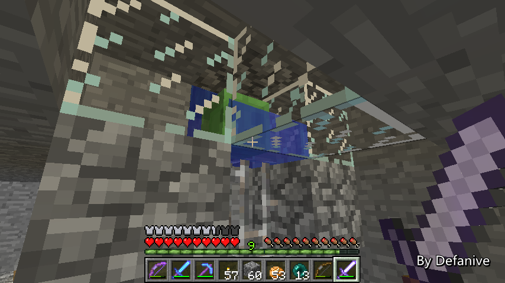
16982楼
2013-05-28 13:40
defanive2
无尽黑夜
14
收入挺丰厚的
——来自 MCLive
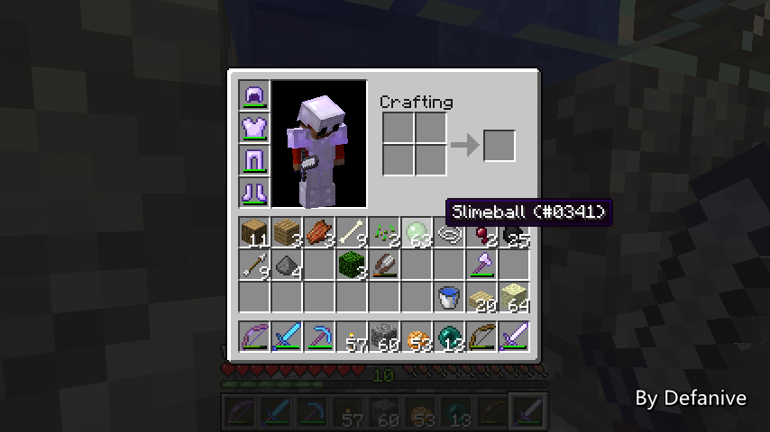
16983楼
2013-05-28 13:41
defanive2
无尽黑夜
14
运气不错！估计今晚能完成任务了
——来自 MCLive
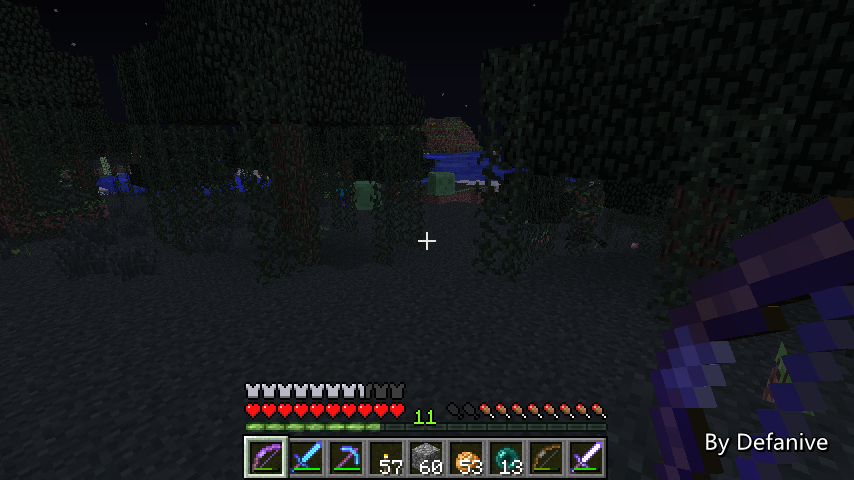
16984楼
2013-05-28 13:47
defanive2
无尽黑夜
14
一只小的也不放过
——来自 MCLive
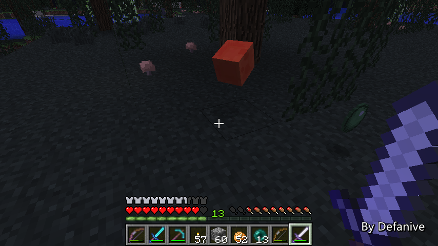
16985楼
2013-05-28 13:50
defanive2
无尽黑夜
14
收获不少！
可以收工回家了
——来自 MCLive
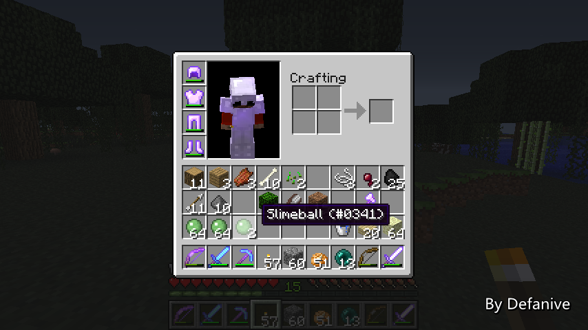
16986楼
2013-05-28 13:53
defanive2
无尽黑夜
14
3组多的史莱姆球
不过造V4的时候就会用掉2组半
所以剩余的其实也不多
——来自 MCLive
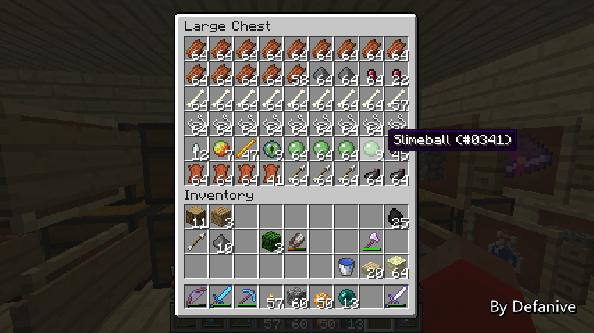
16987楼
2013-05-28 13:57
defanive2
无尽黑夜
14
收小麦换回土豆吧
之前换种小麦的原因是为了繁殖牛
获得牛皮，为村民工程做准备
现在村民工程已经完成了
就没有种小麦的必要了
——来自 MCLive
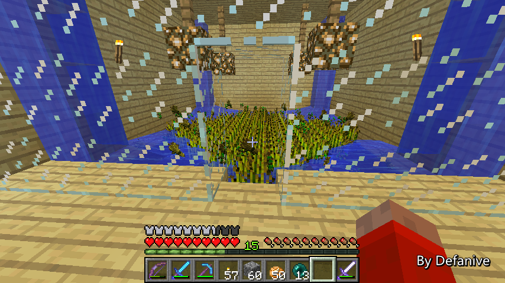
16988楼
2013-05-28 13:59
defanive2
无尽黑夜
14
生土豆不足，无法种满整块田
如果没记错的话，1.4之后修复了fortune对土豆无效的BUG
我们来试试吧
——来自 MCLive
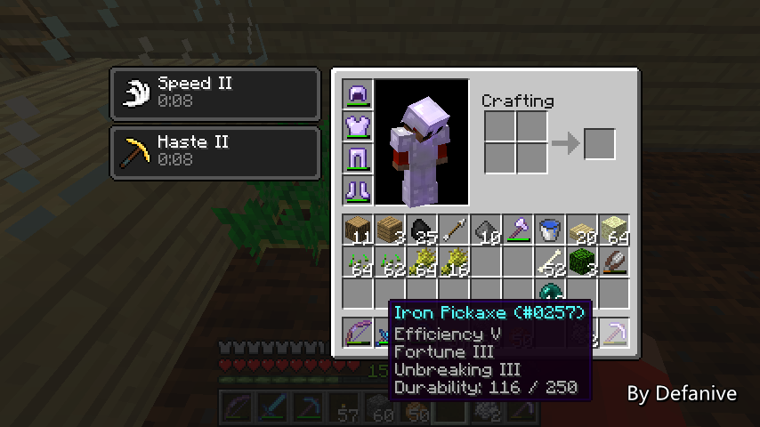
16990楼
2013-05-28 14:02
defanive2
无尽黑夜
14
6个土豆苗，不用fortune平均可以获得15个
——来自 MCLive
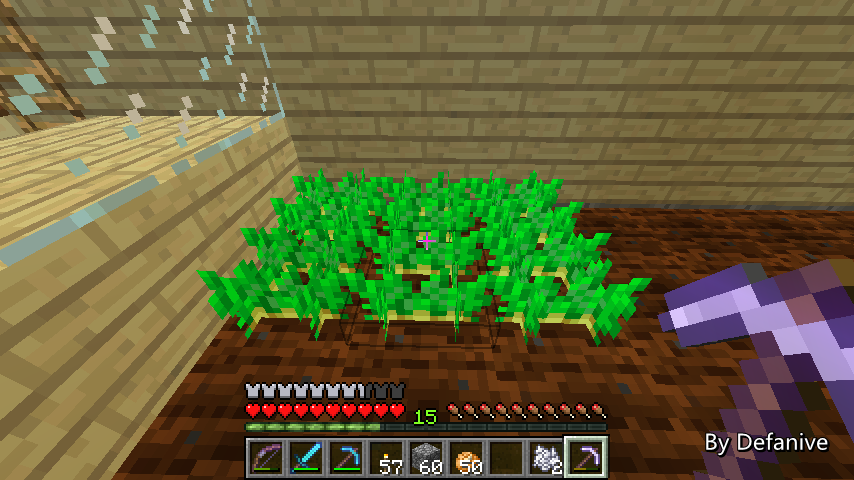
16991楼
2013-05-28 14:03
defanive2
无尽黑夜
14
使用fortuneIII获得了21个
这个例子不能说明fortuneIII对土豆有作用
因为6个土豆即使不用fortuneIII最多也可以获得24个
不过，在破坏其中一个土豆苗的时候获得了5个土豆
这就说明了fortuneIII是有效的
——来自 MCLive
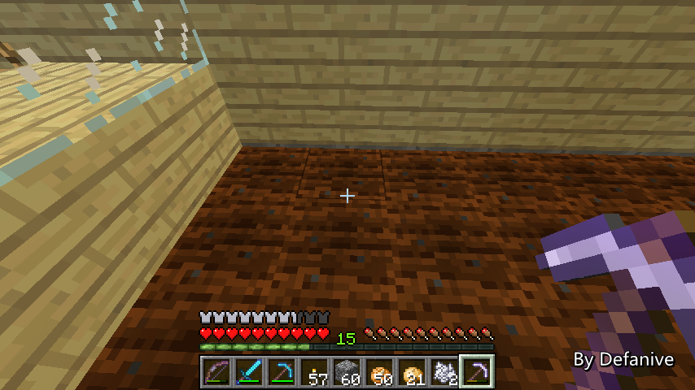
16992楼
2013-05-28 14:05
defanive2
无尽黑夜
14
刚刚种了9个土豆苗，获得了45个土豆
平均每个苗获得了5个
因此fortuneIII的确是有效的
——来自 MCLive
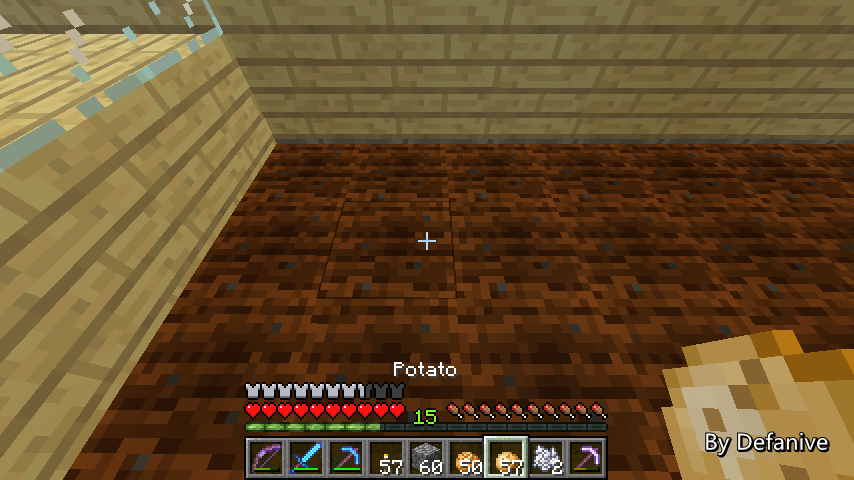
16993楼
2013-05-28 14:06
defanive2
无尽黑夜
14
补种完毕
——来自 MCLive
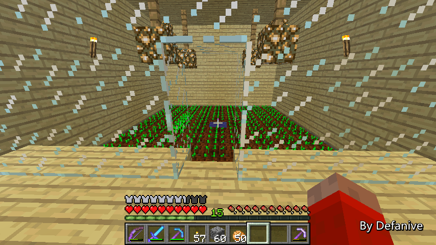
16994楼
2013-05-28 14:09
defanive2
无尽黑夜
14
好吧今天就直播到这里了
明天如果有时间的话会开始造树场V4的
PS 这张图来找找奇怪的地方吧
最先找到的人。。没有奖励！
——来自 MCLive
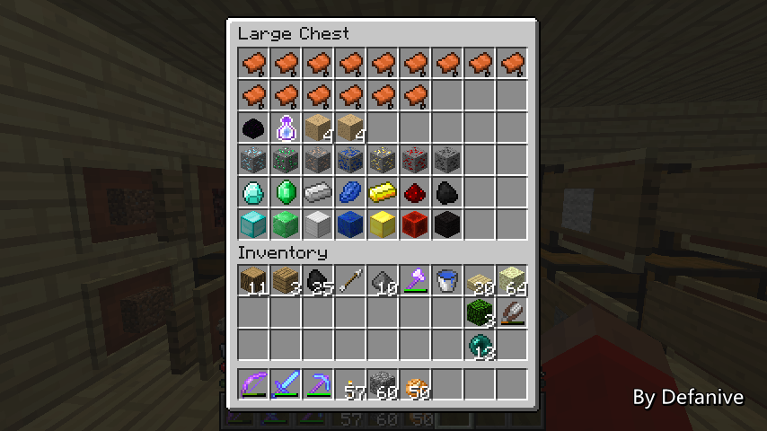
16995楼
2013-05-28 14:14
defanive2
无尽黑夜
14
今天来继续直播啦！
度过了一个寂寞的上下午之后
晚上终于有休闲的时间了
Nice to meet you！
——来自 MCLive
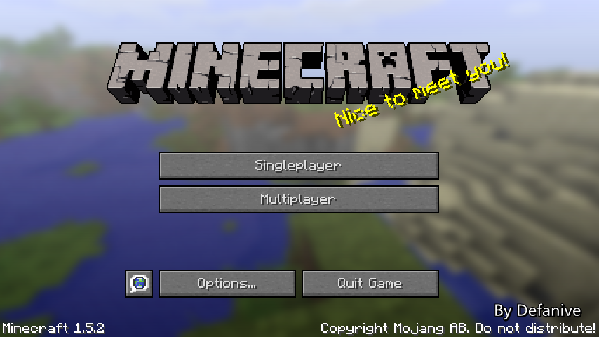
17017楼
2013-05-29 09:36
defanive2
无尽黑夜
14
上次直播结尾其实是这样的
没错，黑色羊毛来伪装煤块了
如果没看错的话，
@我叫做海喵
应该是第一个猜到的
PS 1.6中会正式的加入煤块
所以说凑齐这个收藏箱指日可待了
——来自 MCLive
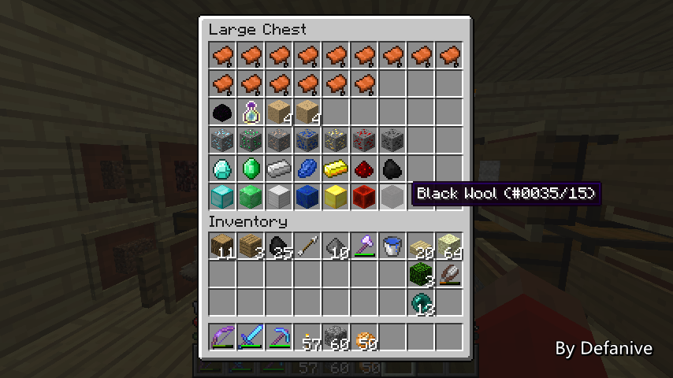
17018楼
2013-05-29 09:39
defanive2
无尽黑夜
14
上次说到要造树场V4，但是史莱姆球不足
于是到沼泽地厮杀了几个晚上
终于凑齐了足够的史莱姆球
现在我们来准备一下开工吧
PS 其实做树场V4的目的是。。
因为建END家时装潢把白桦木都用光了
造个机器方便刷白桦木
——来自 MCLive
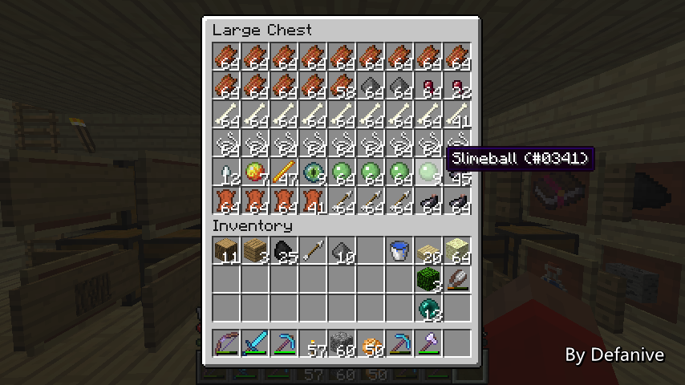
17019楼
2013-05-29 09:42
defanive2
无尽黑夜
14
树场V4要造在哪里呢
第一个选择是可以把树场V2给拆掉
自从1.5更新后V2效率已经没有V3高了
——来自 MCLive
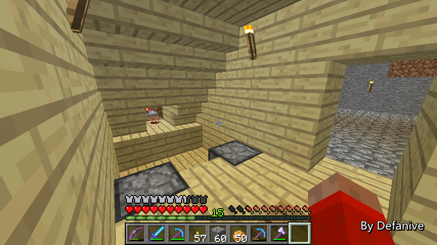
17020楼
2013-05-29 09:44
defanive2
无尽黑夜
14
不过V2的空间不够用
V2上方有了刷铁机的水路
以及熔炉的电路
没有足够的高度空间做V4了
——来自 MCLive
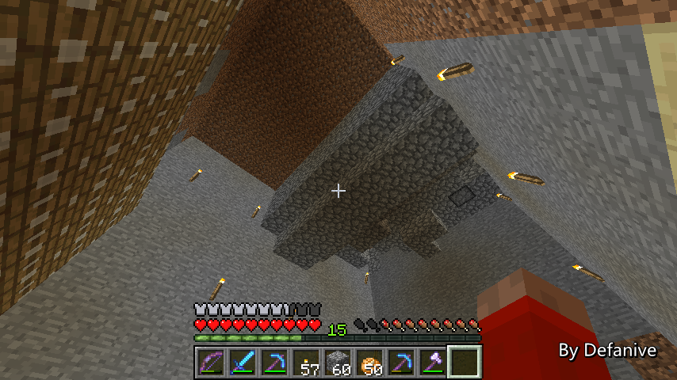
17021楼
2013-05-29 09:45
defanive2
无尽黑夜
14
当然还有下一个选择
那就是废弃已久的树场V1了
自从刷沙机被修复之后，V1就彻底报废了
上方空间挺多，于是就选址在这里吧
PS 粗算了一下，V4的大小为15x15x12
宽度稍微比V3小一点，体积和V3差不多
——来自 MCLive
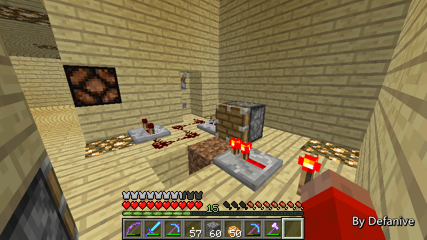
17022楼
2013-05-29 09:47
defanive2
无尽黑夜
14
挖大空间这种任务，自然要有效率V啦
当然还需要一把斧子拆装潢
以及一把silk touch的稿子拆萤石
——来自 MCLive
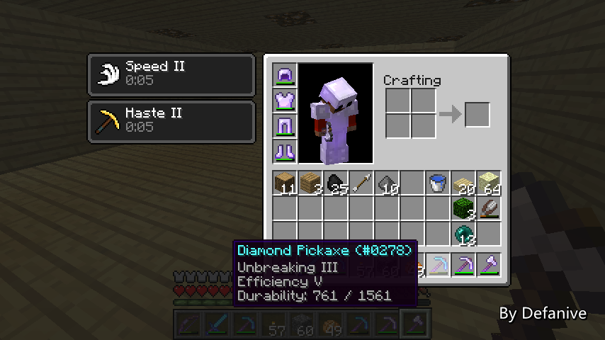
17023楼
2013-05-29 09:49
defanive2
无尽黑夜
14
拆开装潢之后内部的电路就显示出来了
密封得很不错
——来自 MCLive
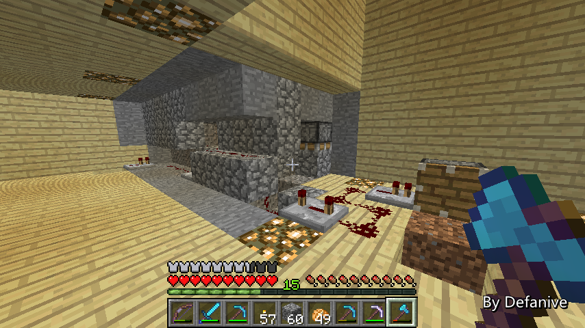
17024楼
2013-05-29 09:51
defanive2
无尽黑夜
14
V1和V4的配合真默契
标记了一下，正好这片区域就是15x15
非常巧合
——来自 MCLive
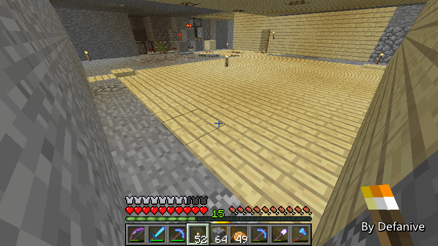
17026楼
2013-05-29 10:00
defanive2
无尽黑夜
14
接下来下一步就是拆装潢，回收
拆旧工程的时候还是有点心疼了
毕竟这是以前的心血
即使废弃了，也还是有点感情
不过旧的不去新的不来
——来自 MCLive
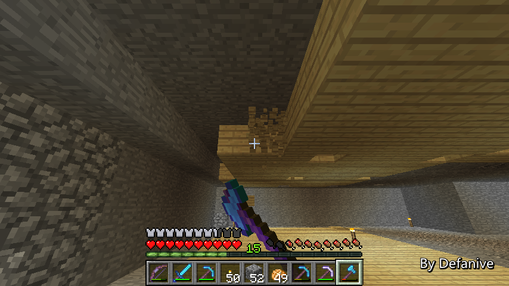
17027楼
2013-05-29 10:06
defanive2
无尽黑夜
14
都清理干净了，可以开工了
——来自 MCLive
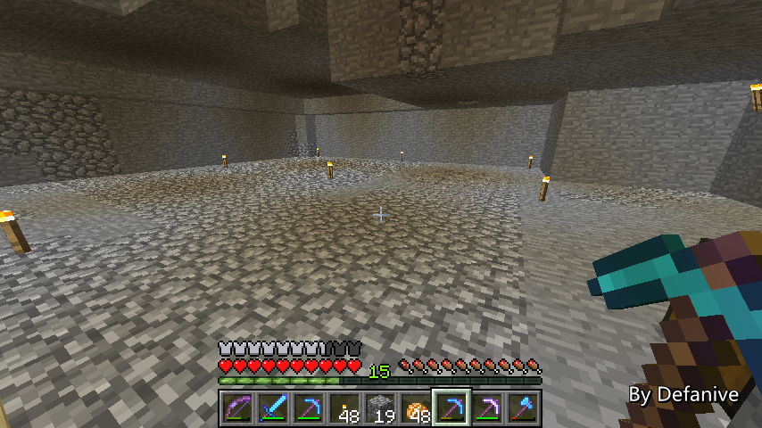
17028楼
2013-05-29 10:13
defanive2
无尽黑夜
14
开挖上方的空间
——来自 MCLive
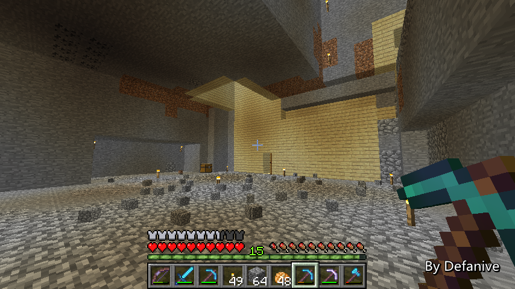
17029楼
2013-05-29 10:23
defanive2
无尽黑夜
14
发现上方这里链接到了树场V2的储藏室
这样挖起来就方便多了
看起来V1和V2的尸体会联合起来变成V4。。
——来自 MCLive
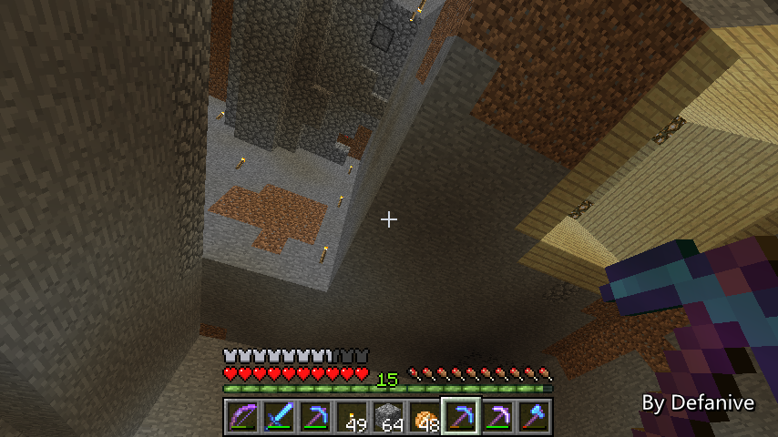
17030楼
2013-05-29 10:24
defanive2
无尽黑夜
14
艰苦的挖掘任务中
——来自 MCLive
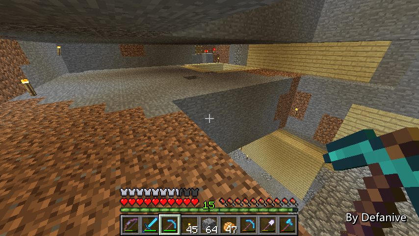
17031楼
2013-05-29 10:36
defanive2
无尽黑夜
14
终于挖出足够大的空间了！
接下来就可以正式开始建造了
真是一个大工程
——来自 MCLive
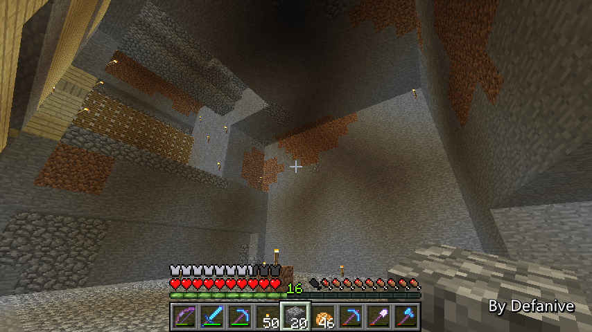
17032楼
2013-05-29 10:49
defanive2
无尽黑夜
14
首先是底部线路系统的建造
这个系统用了和V3的底部非常类似的系统
之前也有演示过，具体电路原理就不多讲了
可以参考V3的讲解
——来自 MCLive
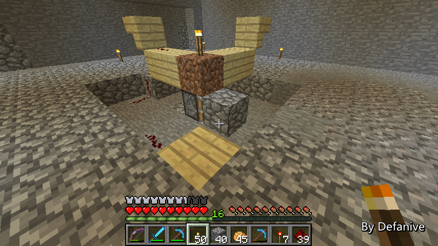
17034楼
2013-05-29 10:58
defanive2
无尽黑夜
14
右下角的白桦木板会是玩家的站位
上面会放上踏板
当玩家站在上面时，就会激活比较器脉冲
进行迅速发射骨粉
同时脉冲的信号也会不断的更新活塞
这样当上面树苗长成之后活塞就能取得信号了
——来自 MCLive
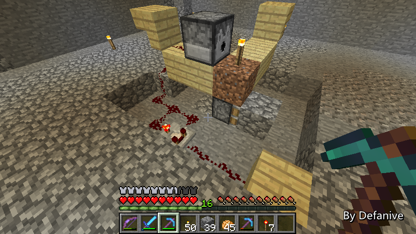
17035楼
2013-05-29 11:00
首页
上一页
234
235
236
237
238
239
239
240
241
242
243
244
下一页
末页